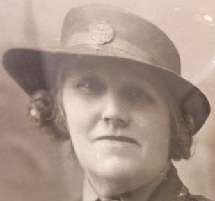

Rose Ethel Muskett Spratt (née Dennett) 1887 - 1978
[ Home ] | [ Calendar ] | [ Surnames Index ] | [ Census Index ] | [ Family History ]Rose Dennett, the wife of Leonard Spratt (the great-uncle of Nigel Horne), was born in Kilburn, London, England on Jun 23, 18871,2,3,4 and married Leonard (an agricultural laborer with whom she had 6 children: Leonard Muskett S, Lewis George, Reginald John, Phyllis Rose, Joyce Catherine and Ronald Ernest) in Thanet, Kent, England around Aug 19065.
During her life, she was living St Lawrence in Thanet in 18911; at 1 Lydden Farm Cottages, Garlinge, Kent on Mar 31, 19017; and at 11 Grotto Road, Cliftonville, Kent on Apr 2, 19116.
She died in Jan/feb/mar 1978 in Thanet4.
Children
- Leonard Muskett S was born c. May 1906
- Lewis George was born on Sep 13, 1907
- Reginald John was born on Apr 17, 1911
- Phyllis Rose was born on Aug 12, 1912
- Joyce Catherine was born on Apr 6, 1915
- Ronald Ernest was born on Apr 14, 1919
Citations
- 1891 England Census Online publication - Provo, UT, USA: The Generations Network, Inc., 2005.Original data - Census Returns of England and Wales, 1891. Kew, Surrey, England: The National Archives of the UK (TNA): Public Record Office (PRO), 1891. Data imaged from The National
- 1901 England Census Online publication - Provo, UT, USA: The Generations Network, Inc., 2005.Original data - Census Returns of England and Wales, 1901. Kew, Surrey, England: The National Archives of the UK (TNA): Public Record Office (PRO), 1901. Data imaged from the National
- 1911 England Census Online publication - Provo, UT, USA: Ancestry.com Operations, Inc., 2011.Original data - Census Returns of England and Wales, 1911. Kew, Surrey, England: The National Archives of the UK (TNA), 1911. Data imaged from the National Archives, London, England.
- England & Wales, Death Index: 1984-2005 Online publication - Provo, UT, USA: The Generations Network, Inc., 2007.Original data - General Register Office. England and Wales Civil Registration Indexes. London, England: General Register Office. © Crown copyright. Published by permission of the Cont
- England & Wales, FreeBMD Marriage Index: 1837-1915 Online publication - Provo, UT, USA: The Generations Network, Inc., 2006.Original data - General Register Office. England and Wales Civil Registration Indexes. London, England: General Register Office. © Crown copyright. Published by permission of the Cont
- 1911 Census for England & Wales - Findmypast (was age 23 and the wife of the head of the household)
- 1901 England, Wales & Scotland Census - Findmypast (was age 13 and the daughter of the head of the household)
Notes
Rumoured to be the illegitimate daughter of the son of a wealthy Norfolk family and a maid.
Media
Rose Dennett

Rose Dennett - 2

England & Wales marriages 1837-2008 - BMD/M/1906/3/AZ/000107/317
1901 England, Wales & Scotland Census - GBC/1901/0005521408
Family Tree

Generated by ged2site. Last updated on Jun 11, 2024